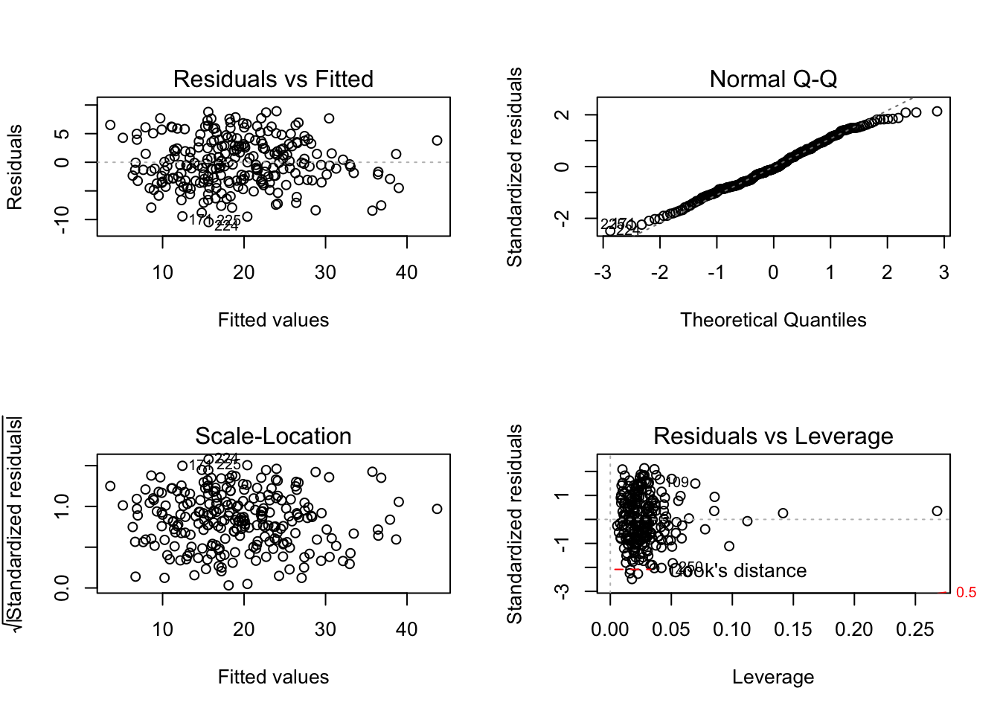

Last updated: 2020-05-05
Checks: 7 0
Knit directory: STA463_Spring_2020/
This reproducible R Markdown analysis was created with workflowr (version 1.4.0). The Checks tab describes the reproducibility checks that were applied when the results were created. The Past versions tab lists the development history.
Great! Since the R Markdown file has been committed to the Git repository, you know the exact version of the code that produced these results.
Great job! The global environment was empty. Objects defined in the global environment can affect the analysis in your R Markdown file in unknown ways. For reproduciblity it’s best to always run the code in an empty environment.
The command set.seed(20200213) was run prior to running the code in the R Markdown file. Setting a seed ensures that any results that rely on randomness, e.g. subsampling or permutations, are reproducible.
Great job! Recording the operating system, R version, and package versions is critical for reproducibility.
Nice! There were no cached chunks for this analysis, so you can be confident that you successfully produced the results during this run.
Great job! Using relative paths to the files within your workflowr project makes it easier to run your code on other machines.
Great! You are using Git for version control. Tracking code development and connecting the code version to the results is critical for reproducibility. The version displayed above was the version of the Git repository at the time these results were generated.
Note that you need to be careful to ensure that all relevant files for the analysis have been committed to Git prior to generating the results (you can use wflow_publish or wflow_git_commit). workflowr only checks the R Markdown file, but you know if there are other scripts or data files that it depends on. Below is the status of the Git repository when the results were generated:
Ignored files:
Ignored: .DS_Store
Ignored: .Rhistory
Ignored: .Rproj.user/
Ignored: lec/
Unstaged changes:
Modified: analysis/corona.Rmd
Note that any generated files, e.g. HTML, png, CSS, etc., are not included in this status report because it is ok for generated content to have uncommitted changes.
These are the previous versions of the R Markdown and HTML files. If you’ve configured a remote Git repository (see ?wflow_git_remote), click on the hyperlinks in the table below to view them.
| File | Version | Author | Date | Message |
|---|---|---|---|---|
| Rmd | 462ea25 | dleelab | 2020-05-06 | added |
bodyfat=read.table("https://raw.githubusercontent.com/dleelab/STA463_563_Fall2019/master/data/bodyfat.txt")
bodyfat1=bodyfat[-c(39,42,86,31,182),]fit=lm(bodyfat.pct~., data=bodyfat1)
summary(fit)
Call:
lm(formula = bodyfat.pct ~ ., data = bodyfat1)
Residuals:
Min 1Q Median 3Q Max
-10.6818 -3.0914 -0.2067 2.9663 9.7495
Coefficients:
Estimate Std. Error t value Pr(>|t|)
(Intercept) 4.713774 24.076239 0.196 0.84495
age 0.061458 0.032848 1.871 0.06260 .
weight -0.010653 0.068670 -0.155 0.87685
height -0.244939 0.193639 -1.265 0.20716
neck -0.377731 0.237760 -1.589 0.11348
chest -0.130036 0.109566 -1.187 0.23651
abdomen 0.906703 0.091554 9.903 < 2e-16 ***
hip -0.167168 0.146680 -1.140 0.25559
thigh 0.163305 0.148672 1.098 0.27315
knee -0.008593 0.250591 -0.034 0.97268
ankle -0.025386 0.361079 -0.070 0.94401
biceps 0.169556 0.172729 0.982 0.32730
forearm 0.263673 0.208082 1.267 0.20636
wrist -1.685174 0.557689 -3.022 0.00279 **
---
Signif. codes: 0 '***' 0.001 '**' 0.01 '*' 0.05 '.' 0.1 ' ' 1
Residual standard error: 4.249 on 233 degrees of freedom
Multiple R-squared: 0.7474, Adjusted R-squared: 0.7333
F-statistic: 53.03 on 13 and 233 DF, p-value: < 2.2e-16AICb=step(fit,direction="backward")Start: AIC=728.3
bodyfat.pct ~ age + weight + height + neck + chest + abdomen +
hip + thigh + knee + ankle + biceps + forearm + wrist
Df Sum of Sq RSS AIC
- knee 1 0.02 4207.5 726.30
- ankle 1 0.09 4207.5 726.31
- weight 1 0.43 4207.9 726.33
- biceps 1 17.40 4224.8 727.32
- thigh 1 21.79 4229.2 727.58
- hip 1 23.45 4230.9 727.67
- chest 1 25.44 4232.9 727.79
- height 1 28.89 4236.3 727.99
- forearm 1 29.00 4236.4 728.00
<none> 4207.4 728.30
- neck 1 45.58 4253.0 728.96
- age 1 63.21 4270.7 729.98
- wrist 1 164.88 4372.3 735.79
- abdomen 1 1771.08 5978.5 813.08
Step: AIC=726.3
bodyfat.pct ~ age + weight + height + neck + chest + abdomen +
hip + thigh + ankle + biceps + forearm + wrist
Df Sum of Sq RSS AIC
- ankle 1 0.12 4207.6 724.31
- weight 1 0.46 4207.9 724.33
- biceps 1 17.42 4224.9 725.32
- thigh 1 22.90 4230.4 725.64
- hip 1 23.78 4231.2 725.69
- chest 1 25.42 4232.9 725.79
- forearm 1 28.97 4236.4 726.00
- height 1 30.22 4237.7 726.07
<none> 4207.5 726.30
- neck 1 45.65 4253.1 726.97
- age 1 67.74 4275.2 728.25
- wrist 1 164.89 4372.4 733.80
- abdomen 1 1771.25 5978.7 811.08
Step: AIC=724.31
bodyfat.pct ~ age + weight + height + neck + chest + abdomen +
hip + thigh + biceps + forearm + wrist
Df Sum of Sq RSS AIC
- weight 1 0.64 4208.2 722.35
- biceps 1 18.42 4226.0 723.39
- thigh 1 22.93 4230.5 723.65
- hip 1 23.69 4231.3 723.69
- chest 1 25.29 4232.9 723.79
- forearm 1 28.85 4236.4 724.00
- height 1 30.10 4237.7 724.07
<none> 4207.6 724.31
- neck 1 46.66 4254.3 725.03
- age 1 69.56 4277.1 726.36
- wrist 1 198.00 4405.6 733.67
- abdomen 1 1800.42 6008.0 810.29
Step: AIC=722.35
bodyfat.pct ~ age + height + neck + chest + abdomen + hip + thigh +
biceps + forearm + wrist
Df Sum of Sq RSS AIC
- biceps 1 17.78 4226.0 721.39
- thigh 1 22.50 4230.7 721.66
- forearm 1 28.22 4236.4 722.00
- hip 1 33.28 4241.5 722.29
<none> 4208.2 722.35
- chest 1 43.63 4251.9 722.89
- neck 1 51.82 4260.1 723.37
- age 1 75.45 4283.7 724.74
- height 1 82.62 4290.9 725.15
- wrist 1 217.85 4426.1 732.81
- abdomen 1 2035.08 6243.3 817.78
Step: AIC=721.39
bodyfat.pct ~ age + height + neck + chest + abdomen + hip + thigh +
forearm + wrist
Df Sum of Sq RSS AIC
- hip 1 34.08 4260.1 721.37
<none> 4226.0 721.39
- chest 1 35.29 4261.3 721.44
- thigh 1 39.74 4265.8 721.70
- neck 1 45.55 4271.6 722.04
- forearm 1 48.88 4274.9 722.23
- age 1 77.67 4303.7 723.89
- height 1 81.62 4307.6 724.11
- wrist 1 210.56 4436.6 731.40
- abdomen 1 2017.65 6243.7 815.79
Step: AIC=721.37
bodyfat.pct ~ age + height + neck + chest + abdomen + thigh +
forearm + wrist
Df Sum of Sq RSS AIC
- thigh 1 13.92 4274.0 720.18
<none> 4260.1 721.37
- neck 1 36.89 4297.0 721.50
- chest 1 44.36 4304.4 721.93
- forearm 1 48.08 4308.2 722.14
- age 1 100.32 4360.4 725.12
- height 1 125.61 4385.7 726.55
- wrist 1 242.30 4502.4 733.03
- abdomen 1 2260.98 6521.1 824.53
Step: AIC=720.18
bodyfat.pct ~ age + height + neck + chest + abdomen + forearm +
wrist
Df Sum of Sq RSS AIC
- neck 1 31.8 4305.8 720.01
<none> 4274.0 720.18
- chest 1 47.8 4321.8 720.93
- forearm 1 55.8 4329.9 721.38
- age 1 91.4 4365.4 723.40
- height 1 121.4 4395.4 725.10
- wrist 1 231.8 4505.8 731.22
- abdomen 1 3214.8 7488.8 856.71
Step: AIC=720.01
bodyfat.pct ~ age + height + chest + abdomen + forearm + wrist
Df Sum of Sq RSS AIC
<none> 4305.8 720.01
- forearm 1 38.9 4344.6 720.23
- chest 1 68.1 4373.9 721.88
- age 1 93.9 4399.6 723.33
- height 1 128.4 4434.2 725.27
- wrist 1 340.8 4646.6 736.82
- abdomen 1 3185.5 7491.2 854.79summary(AICb)
Call:
lm(formula = bodyfat.pct ~ age + height + chest + abdomen + forearm +
wrist, data = bodyfat1)
Residuals:
Min 1Q Median 3Q Max
-10.445 -3.103 -0.361 3.033 8.917
Coefficients:
Estimate Std. Error t value Pr(>|t|)
(Intercept) 4.59694 8.21002 0.560 0.57606
age 0.05703 0.02494 2.287 0.02305 *
height -0.32321 0.12079 -2.676 0.00797 **
chest -0.16774 0.08609 -1.948 0.05253 .
abdomen 0.86277 0.06475 13.325 < 2e-16 ***
forearm 0.27422 0.18631 1.472 0.14239
wrist -1.97588 0.45335 -4.358 1.94e-05 ***
---
Signif. codes: 0 '***' 0.001 '**' 0.01 '*' 0.05 '.' 0.1 ' ' 1
Residual standard error: 4.236 on 240 degrees of freedom
Multiple R-squared: 0.7415, Adjusted R-squared: 0.735
F-statistic: 114.7 on 6 and 240 DF, p-value: < 2.2e-16par(mfrow=c(2,2))
plot(AICb,add.smooth=FALSE)
n=nrow(bodyfat1)
BICb=step(fit,direction="backward",k=log(n))Start: AIC=777.43
bodyfat.pct ~ age + weight + height + neck + chest + abdomen +
hip + thigh + knee + ankle + biceps + forearm + wrist
Df Sum of Sq RSS AIC
- knee 1 0.02 4207.5 771.92
- ankle 1 0.09 4207.5 771.93
- weight 1 0.43 4207.9 771.95
- biceps 1 17.40 4224.8 772.94
- thigh 1 21.79 4229.2 773.20
- hip 1 23.45 4230.9 773.30
- chest 1 25.44 4232.9 773.41
- height 1 28.89 4236.3 773.61
- forearm 1 29.00 4236.4 773.62
- neck 1 45.58 4253.0 774.58
- age 1 63.21 4270.7 775.61
<none> 4207.4 777.43
- wrist 1 164.88 4372.3 781.42
- abdomen 1 1771.08 5978.5 858.70
Step: AIC=771.92
bodyfat.pct ~ age + weight + height + neck + chest + abdomen +
hip + thigh + ankle + biceps + forearm + wrist
Df Sum of Sq RSS AIC
- ankle 1 0.12 4207.6 766.42
- weight 1 0.46 4207.9 766.44
- biceps 1 17.42 4224.9 767.43
- thigh 1 22.90 4230.4 767.75
- hip 1 23.78 4231.2 767.81
- chest 1 25.42 4232.9 767.90
- forearm 1 28.97 4236.4 768.11
- height 1 30.22 4237.7 768.18
- neck 1 45.65 4253.1 769.08
- age 1 67.74 4275.2 770.36
<none> 4207.5 771.92
- wrist 1 164.89 4372.4 775.91
- abdomen 1 1771.25 5978.7 853.20
Step: AIC=766.42
bodyfat.pct ~ age + weight + height + neck + chest + abdomen +
hip + thigh + biceps + forearm + wrist
Df Sum of Sq RSS AIC
- weight 1 0.64 4208.2 760.95
- biceps 1 18.42 4226.0 761.99
- thigh 1 22.93 4230.5 762.25
- hip 1 23.69 4231.3 762.30
- chest 1 25.29 4232.9 762.39
- forearm 1 28.85 4236.4 762.60
- height 1 30.10 4237.7 762.67
- neck 1 46.66 4254.3 763.64
- age 1 69.56 4277.1 764.96
<none> 4207.6 766.42
- wrist 1 198.00 4405.6 772.27
- abdomen 1 1800.42 6008.0 848.89
Step: AIC=760.95
bodyfat.pct ~ age + height + neck + chest + abdomen + hip + thigh +
biceps + forearm + wrist
Df Sum of Sq RSS AIC
- biceps 1 17.78 4226.0 756.48
- thigh 1 22.50 4230.7 756.76
- forearm 1 28.22 4236.4 757.09
- hip 1 33.28 4241.5 757.39
- chest 1 43.63 4251.9 757.99
- neck 1 51.82 4260.1 758.46
- age 1 75.45 4283.7 759.83
- height 1 82.62 4290.9 760.24
<none> 4208.2 760.95
- wrist 1 217.85 4426.1 767.91
- abdomen 1 2035.08 6243.3 852.87
Step: AIC=756.48
bodyfat.pct ~ age + height + neck + chest + abdomen + hip + thigh +
forearm + wrist
Df Sum of Sq RSS AIC
- hip 1 34.08 4260.1 752.96
- chest 1 35.29 4261.3 753.03
- thigh 1 39.74 4265.8 753.28
- neck 1 45.55 4271.6 753.62
- forearm 1 48.88 4274.9 753.81
- age 1 77.67 4303.7 755.47
- height 1 81.62 4307.6 755.70
<none> 4226.0 756.48
- wrist 1 210.56 4436.6 762.98
- abdomen 1 2017.65 6243.7 847.38
Step: AIC=752.96
bodyfat.pct ~ age + height + neck + chest + abdomen + thigh +
forearm + wrist
Df Sum of Sq RSS AIC
- thigh 1 13.92 4274.0 748.25
- neck 1 36.89 4297.0 749.58
- chest 1 44.36 4304.4 750.01
- forearm 1 48.08 4308.2 750.22
<none> 4260.1 752.96
- age 1 100.32 4360.4 753.20
- height 1 125.61 4385.7 754.62
- wrist 1 242.30 4502.4 761.11
- abdomen 1 2260.98 6521.1 852.61
Step: AIC=748.25
bodyfat.pct ~ age + height + neck + chest + abdomen + forearm +
wrist
Df Sum of Sq RSS AIC
- neck 1 31.8 4305.8 744.57
- chest 1 47.8 4321.8 745.49
- forearm 1 55.8 4329.9 745.95
- age 1 91.4 4365.4 747.97
<none> 4274.0 748.25
- height 1 121.4 4395.4 749.66
- wrist 1 231.8 4505.8 755.79
- abdomen 1 3214.8 7488.8 881.27
Step: AIC=744.57
bodyfat.pct ~ age + height + chest + abdomen + forearm + wrist
Df Sum of Sq RSS AIC
- forearm 1 38.9 4344.6 741.28
- chest 1 68.1 4373.9 742.94
- age 1 93.9 4399.6 744.39
<none> 4305.8 744.57
- height 1 128.4 4434.2 746.32
- wrist 1 340.8 4646.6 757.88
- abdomen 1 3185.5 7491.2 875.85
Step: AIC=741.28
bodyfat.pct ~ age + height + chest + abdomen + wrist
Df Sum of Sq RSS AIC
- chest 1 50.1 4394.7 738.60
- age 1 68.3 4412.9 739.62
<none> 4344.6 741.28
- height 1 124.2 4468.8 742.73
- wrist 1 302.1 4646.7 752.38
- abdomen 1 3177.1 7521.8 871.34
Step: AIC=738.6
bodyfat.pct ~ age + height + abdomen + wrist
Df Sum of Sq RSS AIC
- age 1 85.4 4480.2 737.85
<none> 4394.7 738.60
- height 1 120.8 4515.5 739.79
- wrist 1 408.6 4803.3 755.05
- abdomen 1 9472.4 13867.1 1016.93
Step: AIC=737.85
bodyfat.pct ~ height + abdomen + wrist
Df Sum of Sq RSS AIC
<none> 4480.2 737.85
- height 1 233.7 4713.9 744.90
- wrist 1 346.1 4826.2 750.72
- abdomen 1 9867.5 14347.6 1019.83summary(BICb)
Call:
lm(formula = bodyfat.pct ~ height + abdomen + wrist, data = bodyfat1)
Residuals:
Min 1Q Median 3Q Max
-9.8873 -3.1289 -0.2657 3.1623 9.9508
Coefficients:
Estimate Std. Error t value Pr(>|t|)
(Intercept) 7.45048 7.89846 0.943 0.346473
height -0.40707 0.11433 -3.561 0.000445 ***
abdomen 0.77834 0.03364 23.134 < 2e-16 ***
wrist -1.73617 0.40074 -4.332 2.16e-05 ***
---
Signif. codes: 0 '***' 0.001 '**' 0.01 '*' 0.05 '.' 0.1 ' ' 1
Residual standard error: 4.294 on 243 degrees of freedom
Multiple R-squared: 0.731, Adjusted R-squared: 0.7277
F-statistic: 220.2 on 3 and 243 DF, p-value: < 2.2e-16par(mfrow=c(2,2))
plot(BICb,add.smooth=FALSE)null=lm(bodyfat.pct~1, data=bodyfat1)
full=lm(bodyfat.pct~.,data=bodyfat1)AICf=step(null, direction="forward",scope=list(upper=full))Start: AIC=1042.17
bodyfat.pct ~ 1
Df Sum of Sq RSS AIC
+ abdomen 1 11272.3 5384.8 765.24
+ chest 1 8079.3 8577.8 880.24
+ hip 1 6595.8 10061.3 919.64
+ weight 1 6271.6 10385.5 927.48
+ thigh 1 4914.0 11743.0 957.82
+ neck 1 3928.2 12728.8 977.73
+ knee 1 3918.2 12738.9 977.93
+ biceps 1 3777.8 12879.3 980.64
+ forearm 1 2091.3 14565.8 1011.03
+ wrist 1 1806.0 14851.1 1015.82
+ age 1 1381.7 15275.4 1022.78
+ ankle 1 1377.0 15280.1 1022.85
<none> 16657.1 1042.17
+ height 1 14.7 16642.4 1043.95
Step: AIC=765.24
bodyfat.pct ~ abdomen
Df Sum of Sq RSS AIC
+ weight 1 741.54 4643.2 730.64
+ wrist 1 670.86 4713.9 734.37
+ height 1 558.54 4826.2 740.19
+ neck 1 431.71 4953.1 746.60
+ ankle 1 408.95 4975.8 747.73
+ hip 1 368.94 5015.8 749.71
+ knee 1 297.48 5087.3 753.20
+ chest 1 245.61 5139.2 755.71
+ age 1 134.15 5250.6 761.01
+ forearm 1 126.12 5258.6 761.38
+ thigh 1 122.60 5262.2 761.55
+ biceps 1 106.56 5278.2 762.30
<none> 5384.8 765.24
Step: AIC=730.64
bodyfat.pct ~ abdomen + weight
Df Sum of Sq RSS AIC
+ wrist 1 194.342 4448.9 722.08
+ thigh 1 64.555 4578.7 729.18
+ neck 1 60.599 4582.6 729.40
+ biceps 1 43.814 4599.4 730.30
<none> 4643.2 730.64
+ height 1 29.879 4613.3 731.05
+ forearm 1 15.642 4627.6 731.81
+ ankle 1 11.512 4631.7 732.03
+ chest 1 9.686 4633.5 732.13
+ age 1 3.135 4640.1 732.48
+ hip 1 0.864 4642.4 732.60
+ knee 1 0.264 4643.0 732.63
Step: AIC=722.08
bodyfat.pct ~ abdomen + weight + wrist
Df Sum of Sq RSS AIC
+ biceps 1 63.711 4385.2 720.52
+ forearm 1 45.452 4403.4 721.55
<none> 4448.9 722.08
+ height 1 32.899 4416.0 722.25
+ thigh 1 27.087 4421.8 722.57
+ age 1 25.900 4423.0 722.64
+ neck 1 8.228 4440.7 723.62
+ chest 1 5.234 4443.6 723.79
+ knee 1 4.308 4444.6 723.84
+ hip 1 2.773 4446.1 723.93
+ ankle 1 0.302 4448.6 724.07
Step: AIC=720.52
bodyfat.pct ~ abdomen + weight + wrist + biceps
Df Sum of Sq RSS AIC
<none> 4385.2 720.52
+ age 1 30.4493 4354.7 720.80
+ neck 1 19.9062 4365.3 721.40
+ forearm 1 18.0195 4367.2 721.50
+ height 1 13.2257 4371.9 721.77
+ thigh 1 10.4040 4374.8 721.93
+ chest 1 9.6830 4375.5 721.97
+ knee 1 5.8835 4379.3 722.19
+ hip 1 2.6655 4382.5 722.37
+ ankle 1 2.2862 4382.9 722.39summary(AICf)
Call:
lm(formula = bodyfat.pct ~ abdomen + weight + wrist + biceps,
data = bodyfat1)
Residuals:
Min 1Q Median 3Q Max
-9.9094 -3.0949 -0.2513 3.2278 9.2880
Coefficients:
Estimate Std. Error t value Pr(>|t|)
(Intercept) -30.98611 7.01286 -4.418 1.50e-05 ***
abdomen 0.96241 0.05496 17.511 < 2e-16 ***
weight -0.11673 0.02745 -4.253 3.02e-05 ***
wrist -1.48815 0.43280 -3.438 0.000689 ***
biceps 0.28245 0.15063 1.875 0.061985 .
---
Signif. codes: 0 '***' 0.001 '**' 0.01 '*' 0.05 '.' 0.1 ' ' 1
Residual standard error: 4.257 on 242 degrees of freedom
Multiple R-squared: 0.7367, Adjusted R-squared: 0.7324
F-statistic: 169.3 on 4 and 242 DF, p-value: < 2.2e-16BICf=step(null, direction="forward", scope=list(upper=full),k=log(n))Start: AIC=1045.68
bodyfat.pct ~ 1
Df Sum of Sq RSS AIC
+ abdomen 1 11272.3 5384.8 772.26
+ chest 1 8079.3 8577.8 887.26
+ hip 1 6595.8 10061.3 926.66
+ weight 1 6271.6 10385.5 934.50
+ thigh 1 4914.0 11743.0 964.84
+ neck 1 3928.2 12728.8 984.75
+ knee 1 3918.2 12738.9 984.95
+ biceps 1 3777.8 12879.3 987.65
+ forearm 1 2091.3 14565.8 1018.05
+ wrist 1 1806.0 14851.1 1022.84
+ age 1 1381.7 15275.4 1029.80
+ ankle 1 1377.0 15280.1 1029.87
<none> 16657.1 1045.68
+ height 1 14.7 16642.4 1050.97
Step: AIC=772.26
bodyfat.pct ~ abdomen
Df Sum of Sq RSS AIC
+ weight 1 741.54 4643.2 741.17
+ wrist 1 670.86 4713.9 744.90
+ height 1 558.54 4826.2 750.72
+ neck 1 431.71 4953.1 757.13
+ ankle 1 408.95 4975.8 758.26
+ hip 1 368.94 5015.8 760.24
+ knee 1 297.48 5087.3 763.73
+ chest 1 245.61 5139.2 766.24
+ age 1 134.15 5250.6 771.54
+ forearm 1 126.12 5258.6 771.91
+ thigh 1 122.60 5262.2 772.08
<none> 5384.8 772.26
+ biceps 1 106.56 5278.2 772.83
Step: AIC=741.17
bodyfat.pct ~ abdomen + weight
Df Sum of Sq RSS AIC
+ wrist 1 194.342 4448.9 736.12
<none> 4643.2 741.17
+ thigh 1 64.555 4578.7 743.22
+ neck 1 60.599 4582.6 743.44
+ biceps 1 43.814 4599.4 744.34
+ height 1 29.879 4613.3 745.09
+ forearm 1 15.642 4627.6 745.85
+ ankle 1 11.512 4631.7 746.07
+ chest 1 9.686 4633.5 746.16
+ age 1 3.135 4640.1 746.51
+ hip 1 0.864 4642.4 746.63
+ knee 1 0.264 4643.0 746.67
Step: AIC=736.12
bodyfat.pct ~ abdomen + weight + wrist
Df Sum of Sq RSS AIC
<none> 4448.9 736.12
+ biceps 1 63.711 4385.2 738.07
+ forearm 1 45.452 4403.4 739.09
+ height 1 32.899 4416.0 739.80
+ thigh 1 27.087 4421.8 740.12
+ age 1 25.900 4423.0 740.19
+ neck 1 8.228 4440.7 741.17
+ chest 1 5.234 4443.6 741.34
+ knee 1 4.308 4444.6 741.39
+ hip 1 2.773 4446.1 741.47
+ ankle 1 0.302 4448.6 741.61summary(BICf)
Call:
lm(formula = bodyfat.pct ~ abdomen + weight + wrist, data = bodyfat1)
Residuals:
Min 1Q Median 3Q Max
-9.7874 -3.1975 -0.4396 3.2762 9.9296
Coefficients:
Estimate Std. Error t value Pr(>|t|)
(Intercept) -26.92797 6.70500 -4.016 7.89e-05 ***
abdomen 0.95312 0.05502 17.323 < 2e-16 ***
weight -0.09151 0.02405 -3.805 0.00018 ***
wrist -1.41093 0.43306 -3.258 0.00128 **
---
Signif. codes: 0 '***' 0.001 '**' 0.01 '*' 0.05 '.' 0.1 ' ' 1
Residual standard error: 4.279 on 243 degrees of freedom
Multiple R-squared: 0.7329, Adjusted R-squared: 0.7296
F-statistic: 222.3 on 3 and 243 DF, p-value: < 2.2e-16AICs=step(null, direction="both",scope=list(upper=full))Start: AIC=1042.17
bodyfat.pct ~ 1
Df Sum of Sq RSS AIC
+ abdomen 1 11272.3 5384.8 765.24
+ chest 1 8079.3 8577.8 880.24
+ hip 1 6595.8 10061.3 919.64
+ weight 1 6271.6 10385.5 927.48
+ thigh 1 4914.0 11743.0 957.82
+ neck 1 3928.2 12728.8 977.73
+ knee 1 3918.2 12738.9 977.93
+ biceps 1 3777.8 12879.3 980.64
+ forearm 1 2091.3 14565.8 1011.03
+ wrist 1 1806.0 14851.1 1015.82
+ age 1 1381.7 15275.4 1022.78
+ ankle 1 1377.0 15280.1 1022.85
<none> 16657.1 1042.17
+ height 1 14.7 16642.4 1043.95
Step: AIC=765.24
bodyfat.pct ~ abdomen
Df Sum of Sq RSS AIC
+ weight 1 741.5 4643.2 730.64
+ wrist 1 670.9 4713.9 734.37
+ height 1 558.5 4826.2 740.19
+ neck 1 431.7 4953.1 746.60
+ ankle 1 408.9 4975.8 747.73
+ hip 1 368.9 5015.8 749.71
+ knee 1 297.5 5087.3 753.20
+ chest 1 245.6 5139.2 755.71
+ age 1 134.1 5250.6 761.01
+ forearm 1 126.1 5258.6 761.38
+ thigh 1 122.6 5262.2 761.55
+ biceps 1 106.6 5278.2 762.30
<none> 5384.8 765.24
- abdomen 1 11272.3 16657.1 1042.17
Step: AIC=730.64
bodyfat.pct ~ abdomen + weight
Df Sum of Sq RSS AIC
+ wrist 1 194.3 4448.9 722.08
+ thigh 1 64.6 4578.7 729.18
+ neck 1 60.6 4582.6 729.40
+ biceps 1 43.8 4599.4 730.30
<none> 4643.2 730.64
+ height 1 29.9 4613.3 731.05
+ forearm 1 15.6 4627.6 731.81
+ ankle 1 11.5 4631.7 732.03
+ chest 1 9.7 4633.5 732.13
+ age 1 3.1 4640.1 732.48
+ hip 1 0.9 4642.4 732.60
+ knee 1 0.3 4643.0 732.63
- weight 1 741.5 5384.8 765.24
- abdomen 1 5742.3 10385.5 927.48
Step: AIC=722.08
bodyfat.pct ~ abdomen + weight + wrist
Df Sum of Sq RSS AIC
+ biceps 1 63.7 4385.2 720.52
+ forearm 1 45.5 4403.4 721.55
<none> 4448.9 722.08
+ height 1 32.9 4416.0 722.25
+ thigh 1 27.1 4421.8 722.57
+ age 1 25.9 4423.0 722.64
+ neck 1 8.2 4440.7 723.62
+ chest 1 5.2 4443.6 723.79
+ knee 1 4.3 4444.6 723.84
+ hip 1 2.8 4446.1 723.93
+ ankle 1 0.3 4448.6 724.07
- wrist 1 194.3 4643.2 730.64
- weight 1 265.0 4713.9 734.37
- abdomen 1 5494.1 9943.0 918.72
Step: AIC=720.52
bodyfat.pct ~ abdomen + weight + wrist + biceps
Df Sum of Sq RSS AIC
<none> 4385.2 720.52
+ age 1 30.4 4354.7 720.80
+ neck 1 19.9 4365.3 721.40
+ forearm 1 18.0 4367.2 721.50
+ height 1 13.2 4371.9 721.77
+ thigh 1 10.4 4374.8 721.93
+ chest 1 9.7 4375.5 721.97
- biceps 1 63.7 4448.9 722.08
+ knee 1 5.9 4379.3 722.19
+ hip 1 2.7 4382.5 722.37
+ ankle 1 2.3 4382.9 722.39
- wrist 1 214.2 4599.4 730.30
- weight 1 327.7 4712.9 736.32
- abdomen 1 5556.2 9941.3 920.68summary(AICs)
Call:
lm(formula = bodyfat.pct ~ abdomen + weight + wrist + biceps,
data = bodyfat1)
Residuals:
Min 1Q Median 3Q Max
-9.9094 -3.0949 -0.2513 3.2278 9.2880
Coefficients:
Estimate Std. Error t value Pr(>|t|)
(Intercept) -30.98611 7.01286 -4.418 1.50e-05 ***
abdomen 0.96241 0.05496 17.511 < 2e-16 ***
weight -0.11673 0.02745 -4.253 3.02e-05 ***
wrist -1.48815 0.43280 -3.438 0.000689 ***
biceps 0.28245 0.15063 1.875 0.061985 .
---
Signif. codes: 0 '***' 0.001 '**' 0.01 '*' 0.05 '.' 0.1 ' ' 1
Residual standard error: 4.257 on 242 degrees of freedom
Multiple R-squared: 0.7367, Adjusted R-squared: 0.7324
F-statistic: 169.3 on 4 and 242 DF, p-value: < 2.2e-16BICs=step(null, direction="both", scope=list(upper=full),k=log(n))Start: AIC=1045.68
bodyfat.pct ~ 1
Df Sum of Sq RSS AIC
+ abdomen 1 11272.3 5384.8 772.26
+ chest 1 8079.3 8577.8 887.26
+ hip 1 6595.8 10061.3 926.66
+ weight 1 6271.6 10385.5 934.50
+ thigh 1 4914.0 11743.0 964.84
+ neck 1 3928.2 12728.8 984.75
+ knee 1 3918.2 12738.9 984.95
+ biceps 1 3777.8 12879.3 987.65
+ forearm 1 2091.3 14565.8 1018.05
+ wrist 1 1806.0 14851.1 1022.84
+ age 1 1381.7 15275.4 1029.80
+ ankle 1 1377.0 15280.1 1029.87
<none> 16657.1 1045.68
+ height 1 14.7 16642.4 1050.97
Step: AIC=772.26
bodyfat.pct ~ abdomen
Df Sum of Sq RSS AIC
+ weight 1 741.5 4643.2 741.17
+ wrist 1 670.9 4713.9 744.90
+ height 1 558.5 4826.2 750.72
+ neck 1 431.7 4953.1 757.13
+ ankle 1 408.9 4975.8 758.26
+ hip 1 368.9 5015.8 760.24
+ knee 1 297.5 5087.3 763.73
+ chest 1 245.6 5139.2 766.24
+ age 1 134.1 5250.6 771.54
+ forearm 1 126.1 5258.6 771.91
+ thigh 1 122.6 5262.2 772.08
<none> 5384.8 772.26
+ biceps 1 106.6 5278.2 772.83
- abdomen 1 11272.3 16657.1 1045.68
Step: AIC=741.17
bodyfat.pct ~ abdomen + weight
Df Sum of Sq RSS AIC
+ wrist 1 194.3 4448.9 736.12
<none> 4643.2 741.17
+ thigh 1 64.6 4578.7 743.22
+ neck 1 60.6 4582.6 743.44
+ biceps 1 43.8 4599.4 744.34
+ height 1 29.9 4613.3 745.09
+ forearm 1 15.6 4627.6 745.85
+ ankle 1 11.5 4631.7 746.07
+ chest 1 9.7 4633.5 746.16
+ age 1 3.1 4640.1 746.51
+ hip 1 0.9 4642.4 746.63
+ knee 1 0.3 4643.0 746.67
- weight 1 741.5 5384.8 772.26
- abdomen 1 5742.3 10385.5 934.50
Step: AIC=736.12
bodyfat.pct ~ abdomen + weight + wrist
Df Sum of Sq RSS AIC
<none> 4448.9 736.12
+ biceps 1 63.7 4385.2 738.07
+ forearm 1 45.5 4403.4 739.09
+ height 1 32.9 4416.0 739.80
+ thigh 1 27.1 4421.8 740.12
+ age 1 25.9 4423.0 740.19
- wrist 1 194.3 4643.2 741.17
+ neck 1 8.2 4440.7 741.17
+ chest 1 5.2 4443.6 741.34
+ knee 1 4.3 4444.6 741.39
+ hip 1 2.8 4446.1 741.47
+ ankle 1 0.3 4448.6 741.61
- weight 1 265.0 4713.9 744.90
- abdomen 1 5494.1 9943.0 929.25summary(BICs)
Call:
lm(formula = bodyfat.pct ~ abdomen + weight + wrist, data = bodyfat1)
Residuals:
Min 1Q Median 3Q Max
-9.7874 -3.1975 -0.4396 3.2762 9.9296
Coefficients:
Estimate Std. Error t value Pr(>|t|)
(Intercept) -26.92797 6.70500 -4.016 7.89e-05 ***
abdomen 0.95312 0.05502 17.323 < 2e-16 ***
weight -0.09151 0.02405 -3.805 0.00018 ***
wrist -1.41093 0.43306 -3.258 0.00128 **
---
Signif. codes: 0 '***' 0.001 '**' 0.01 '*' 0.05 '.' 0.1 ' ' 1
Residual standard error: 4.279 on 243 degrees of freedom
Multiple R-squared: 0.7329, Adjusted R-squared: 0.7296
F-statistic: 222.3 on 3 and 243 DF, p-value: < 2.2e-16
sessionInfo()R version 3.6.1 (2019-07-05)
Platform: x86_64-apple-darwin15.6.0 (64-bit)
Running under: macOS Catalina 10.15.4
Matrix products: default
BLAS: /Library/Frameworks/R.framework/Versions/3.6/Resources/lib/libRblas.0.dylib
LAPACK: /Library/Frameworks/R.framework/Versions/3.6/Resources/lib/libRlapack.dylib
locale:
[1] en_US.UTF-8/en_US.UTF-8/en_US.UTF-8/C/en_US.UTF-8/en_US.UTF-8
attached base packages:
[1] stats graphics grDevices utils datasets methods base
loaded via a namespace (and not attached):
[1] workflowr_1.4.0 Rcpp_1.0.4.6 digest_0.6.25 rprojroot_1.3-2
[5] backports_1.1.6 git2r_0.26.1 magrittr_1.5 evaluate_0.14
[9] rlang_0.4.5 stringi_1.4.6 fs_1.4.1 whisker_0.4
[13] rmarkdown_1.15 tools_3.6.1 stringr_1.4.0 glue_1.4.0
[17] xfun_0.12 yaml_2.2.1 compiler_3.6.1 htmltools_0.4.0
[21] knitr_1.28